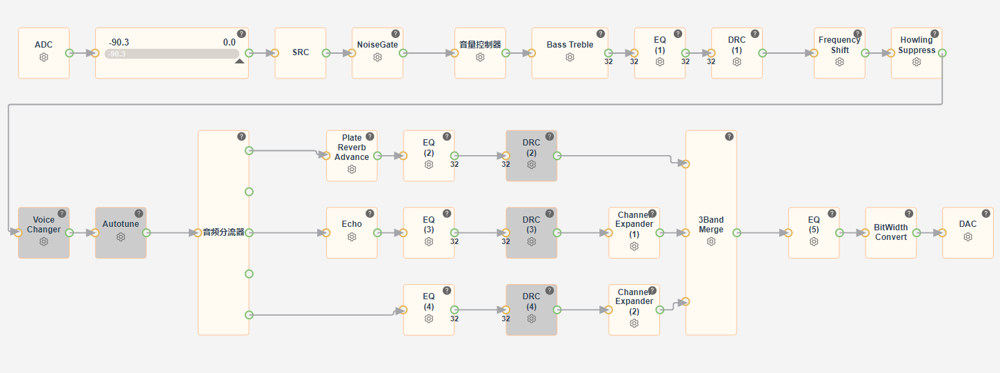

13.6.1. K歌音效
13.6.1.1. 打开麦克风通路
程序中的麦克风通路默认使用按键开关，可自行配置按键表，通过按键发送混响开关的消息
APP_MSG_MIC_EFFECT_ON_OFF。亦可自行定义流程，调用以下接口开关麦克风通路。
int mic_effect_player_open();
void mic_effect_player_close();
13.6.1.2. 麦克风音效流程
麦克风音效与媒体相同，根据DAC声道配置，也内置了多个预设模式，此处以立体声框图为例，浅析各模块的用处。

ADC：麦克风音效，需要一个输入源，可以配置为模拟输入（ADC）、数字输入（IIS_RX）
Indicator（音量指示器）：可设置阈值，若输入信号超过设置的阈值，会显示为红色警告。
SRC：音频同步模块。
NoiseGate：噪声门限，滤除低于门限阈值的噪声。
音量控制器：混响音量独立处理。
Bass Treble：高低音模块，通常用于旋钮按键控制高、中、低音增益。
EQ(1)：前EQ，混响通路主要的音效EQ。
DRC(1)：动态范围压缩，可配置为限幅器、压缩器、扩展器。
Frequency Shift：啸叫抑制（移频法），对输入信号的频率进行整体平移。
Howling Suppress：啸叫抑制（陷波法），在某一个频率点迅速衰减输入信号。
Voice Changer：变声模块。
Autotune：电音模块，根据 预设音调，对演唱者声音的音调进行纠正修饰。
音频分流器：将音频数据流进行分流操作，分别作不同的音效处理。
Plate Reverb：混响效果，模拟声波在物体表面的整体反射，像空旷房间喊话的效果。
Echo：回声效果，产生一种人耳可分辨的回声，就像在山谷叫喊时的回声效果一样模拟声音的反射。
EQ(4)：原声EQ，该EQ主要用于调整原声音效，用于后续与混响、回声音效的叠加。
3BandMerge：将分流器输出的三路数据进行混合叠加。
EQ(5)：后EQ，该EQ主要用于压制固定的啸叫频点。
DAC：模拟输出方式，亦可配置为IIS数字输出方式。
13.6.1.3. 多ADC输入配置
默认框图中提供了2个ADC的流程：麦克风音效->立体声_2ADC(或单声道_2ADC)，直接选择该框图即可使用，程序会自适应配置。
若需要添加更多的ADC节点：
确定使用的芯片支持的ADC通道数(JL701N、JL703N系列为4个)，不同ADC节点按照需求配置不同的通道，不可出现冲突的情况。。
按照以下格式统一命名：MicEff、MicEff1、MicEff2、MicEff3。
新添加的ADC节点，使用MIXER节点接入音频流，根据接入音频流的位置不同，可能需要进行对应的声道转换(
Channel Expander、Channel Merge)。